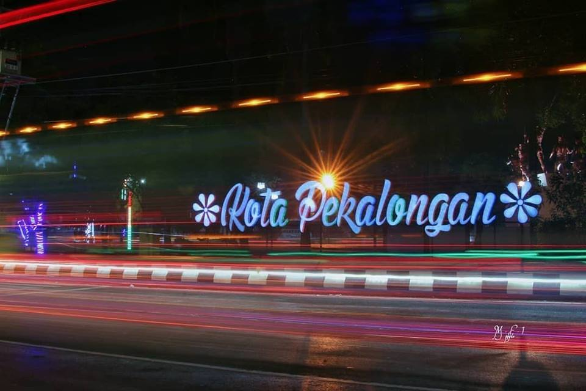
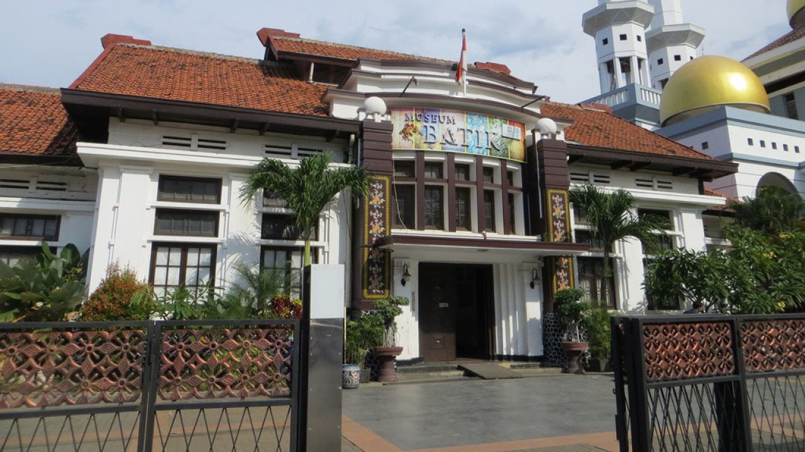
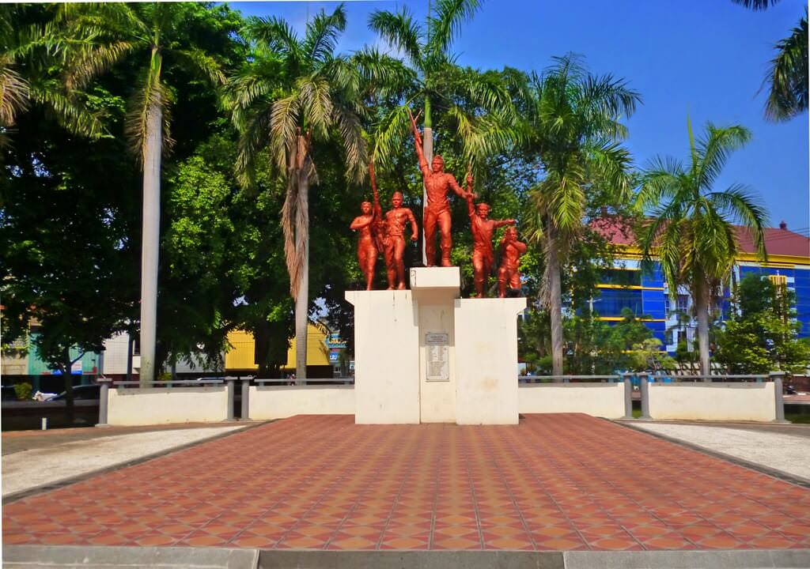

About Pekalongan

Pekalongan adalah kota di provinsi Jawa Tengah, Indonesia. Kota ini merupakan pelabuhan terpenting di Jawa Tengah dan terkenal dengan batiknya. Pekalongan merupakan kota pertama di Indonesia dan kota Asia Tenggara pertama yang
menjadi bagian dari Jaringan Kota Kreatif UNESCO. Pekalongan berbatasan dengan Laut Jawa di utara, Kabupaten Batang di timur, serta Kabupaten Pekalongan di sebelah selatan dan barat, dan terletak di lintas utara. Pekalongan
dikenal dengan julukan "Kota Batik".
Museum Batik

Museum ini memiliki luas tanah dan bangunan 40 meter persegi dan memiliki 1149 koleksi batik, antara lain wayang beber dari kain batik yang berusia ratusan tahun dan alat tenun tradisional atau dikenal sebagai alat tenun bukan
mesin. Museum Batik Pekalongan merupakan Unit Pelaksana Teknis Daerah (UPTD).Keberadaan musum didukung dengan sejumlah fasilitas untuk memperlihatkan batik kepada masyarakat umum bahkan ruang konsultasi untuk mematenkan karya.
Monument Pekalongan

Monumen Djoeang 45. Kita akan disuguhi pemandangan baru dari warisan sejarah tersebut. Monumen yang berdiri guna mengenang perjuangan rakyat Pekalongan menumpas penjajah Jepang pada 3 Oktober 1945 ini kembali direhab. Setelah
kemarin ada peninggian, pavling, dan penambahan lampu. Kini monumen kembali direnovasi menjadi lebih bagus. dibangun semacam akrilik yang berbentuk motif batik jlamprang, itu menonjolkan ciri khas motif batik Kota Pekalongan,
yaitu motif jlamprang.